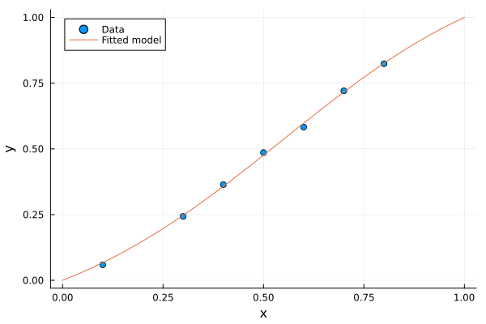

Explicit orthogonal regression
Estimate the parameters of a scalar non-linear model from experimental data.
\[y = f(x, \bm{\beta}) = \frac{\beta_1 x^2 + x (1-x)}{\beta_1 x^2 + 2 x (1-x) + \beta_2 (1-x)^2}\]
using Odrpack
using PlotsFirst, we define the experimental data and the model function.
xdata = [0.100, 0.300, 0.400, 0.500, 0.600, 0.700, 0.800]
ydata = [0.059, 0.243, 0.364, 0.486, 0.583, 0.721, 0.824]function f!(x::Vector{Float64}, beta::Vector{Float64}, y::Vector{Float64})
b1, b2 = beta
y .= (b1 .* x.^2 .+ x .* (1 .- x)) ./ (b1 .* x.^2 .+ 2 .* x .* (1 .- x) .+ b2 .* (1 .- x).^2)
return nothing
endf! (generic function with 1 method)Then, we define an initial guess for the model parameters beta and, optionally, also the corresponding bounds.
beta0 = [1.0, 1.0]
bounds = ([0.0, 0.0], [2.0, 2.0])Lastly, we define the weights for x and y based on a suitable rationale, such as the estimated uncertainty of each variable.
sigma_x = 0.01
sigma_y = 0.05
weight_x = 1/sigma_x^2
weight_y = 1/sigma_y^2We can now launch the regression! If you want to see a brief computation report, set report=:short.
sol = odr_fit(f!, xdata, ydata, beta0; bounds=bounds, weight_x=weight_x, weight_y=weight_y)OdrResult([1.4291868010096827, 1.674734334237366], [-0.00024163942843615866, -0.00017215984488868702, 0.0002915863330001932, 0.00046033941818910887, -0.0006706384130793136, 0.00020980779079516235, -6.398156809045044e-5], [0.008068239939301405, 0.0041293928402926505, -0.0063304068148948844, -0.009496984958312527, 0.013833459936836268, -0.004565589745616161, 0.0015506659294232117], [0.09975836057156384, 0.2998278401551113, 0.4002915863330002, 0.5004603394181891, 0.5993293615869206, 0.7002098077907951, 0.7999360184319096], [0.0670682399393014, 0.24712939284029264, 0.3576695931851051, 0.47650301504168746, 0.5968334599368362, 0.7164344102543838, 0.8255506659294232], [0.09102220796748756, 0.10846718378760636], [0.23060139408460148 0.24253298564190176; 0.24253298564190176 0.32746427328652017], 0.03592798029762559, 28, 0, 5, 0, 0.23295887318058697, 1, "Sum of squares convergence.", true, 0.17963990148812792, 0.008828324263294367, 0.17081157722483356, Int32[-1, 0, 0, -1, 0, 1, 1, 0, 7, 2 … -16, 50, 5, 28, 0, 0, 0, 7, 0, 0], [-0.00024163942843615866, -0.00017215984488868702, 0.0002915863330001932, 0.00046033941818910887, -0.0006706384130793136, 0.00020980779079516235, -6.398156809045044e-5, 0.008068239939301405, 0.0041293928402926505, -0.0063304068148948844 … 0.0, 2.0, 2.0, 0.0, 0.0, 0.0, 0.0, 0.0, 0.0, 0.0])The result is packed in a OdrResult struct. Let's check the solution convergence and the estimated model parameters.
sol.stopreason"Sum of squares convergence."sol.beta2-element Vector{Float64}:
1.4291868010096827
1.674734334237366All fine! Let's plot the solution.
# Plot experimental data
scatter(xdata, ydata, label="Data", legend=:topleft)
# Plot fitted model
xm = collect(range(0.0, 1.0; length=100))
ym = zeros(length(xm))
f!(xm, sol.beta, ym)
plot!(xm, ym, label="Fitted model")
xlabel!("x")
ylabel!("y")GKS: cannot open display - headless operation mode active